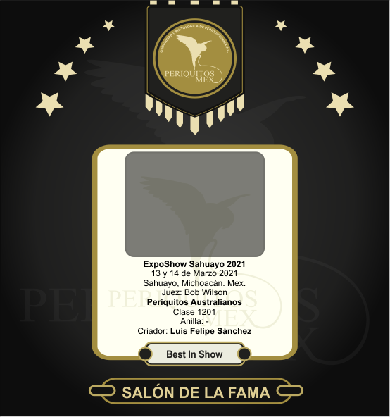

Salón de la fama PeriquitosMex
La crianza de periquitos australianos se puede ver desde diferentes perspectivas; desde una crianza de patio desatendida hasta una crianza profesional con una gran inversión de tiempo, espacio, dinero y aprendizaje. Cada afición o pasatiempo atrae a todo tipo de gente, en PeriquitosMex creemos que la mayoria de los criadores y aficionados a la crianza del periquito es gente buena en su naturaleza tomando en cuenta que el respeto y cuidado de seres vivos está diréctamente relacionado al respeto a la vida misma.
No todos los criadores de periquitos se convierten en expositores y participantes de los concursos que organizan los clubes y asociaciones, no todos los criadores disfrutan de la afición de la misma manera. Para algunos, su mayor satisfacción es criar con éxito ciertas mutaciones, para otros lo mejor de la crianza de periquitos es llevarlos a concursar y poder comparar sus aves con las de otros criadores, otros aficionados lo que más disfrutan es hacer amigos con quien compartir ideas y experiencias, para otros pocos lo más grato es aprender sobre todo lo relacionado a estas interesantes aves desde su genética hasta su correcta alimentación y el impacto del fotoperiodo, entre otros diversos temas.
Este apartado, el Salón de la fama, nace como una oportunidad que tenemos para reconocer el logro de aquellos criadores que en un momento decidieron participar en un evento PeriquitosMex, se esforzaron en la crianza, en el mantenimiento y en la preparación de esas aves que lograron obener un premio importante.
Criador... este espacio reconocemos tu mérito y esfuerzo, gracias por ser parte de todo esto, tu participación impulsa la crianza de aves de ornato en nuestro país, tus logros inspiran a criadores, tus aves crear ilusión y facinación, GRACIAS!
